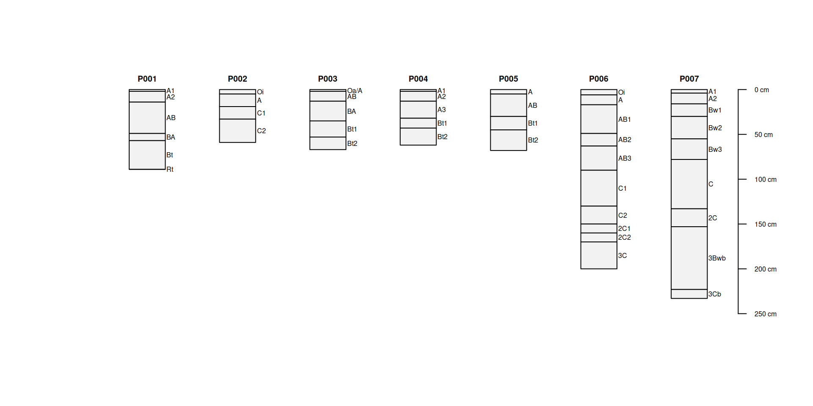
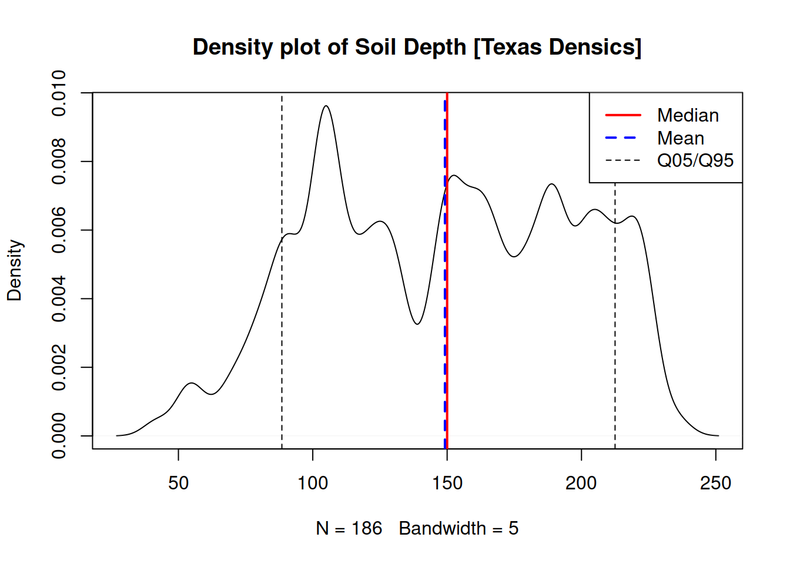

Estimation of soil depth in aqp R package
Estimation functions for soils try to calculate unknown properties based on existing observations and known relationships. The term pedotransfer function was coined by Johan Bouma as “translating data we have into what we need.” Soil surveys, and especially the primary descriptions collected by field soil scientists, offer many opportunities for leveraging this type of information.
In Algorithms for Quantitative Pedology aqp, the heuristics are defined in terms of R code.
There are a variety of functions in aqp that do “estimation” (several have estimate in the name). These functions form a basis for logic underlying many of the high-level functions involving the SoilProfileCollection (SPC) object – the class for soil data offered by the aqp package.
Here in this blog post I will talk about one of the most fundamental aqp estimation functions: estimateSoilDepth. It uses regular expression pattern matching on horizon designations to estimate depth to a root-limiting layer. If you think creatively, you can do much much more with it than that by modifying default arguments. Other functions in the same “family” as estimateSoilDepth include the somewhat more generic: depthOf, minDepthOf and maxDepthOf.
Root-limiting layers are relevant to soil classification and interpretations. Horizon designations correlate with the properties that are required for diagnostic contacts, restrictions, etc. so they stand to be a decent surrogates for property functions over depth.
In the case of identifying contacts, horizon designations are useful and mostly accurate. Though, there are important deviations that are discussed later.
library(aqp)
# load example data from aqp package
data("sp1")
# create a SoilProfileCollection
# depths specifies the profile ID, top and bottom depths in horizon data
depths(sp1) <- id ~ top + bottom
# inspect first 7 profiles from the set
plotSPC(sp1[1:7,])
# aqp::profileApply and aqp::estimateSoilDepth
#
# - calculate depth of each profile in sp1
#
sp1$depth <- profileApply(sp1, estimateSoilDepth)
# aqp::guessHzDesgnName
#
# helper function to look for regular expression "name" and take first result
# this is historic behavior of aqp::plotSPC and is used by estimateSoilDepth
# to locate the column containing horizon designations in the horizons slot
#
guess <- guessHzDesgnName(sp1)
guess## [1] ""# inspect
horizons(sp1)[[guess]]## NULLAt the most basic level in an “estimate” you have one or more inputs producing a single, possibly complex, output. Estimates might be made at the horizon, site/profile or group level.
Let’s look at all of the soil depths in the sp1 collection as a histogram. We make an estimate for each profile, then we summarize those estimates for the “group” sp1.
hist(sp1$depth,
main = "Histogram of Soil Depth [sp1]",
xlim = c(0,300),
breaks = 8, freq = TRUE)
res <- quantile(sp1$depth, probs = c(0.05,0.5,0.95))We can summarize distributions of samples and populations (“groups”) quantitatively using quantiles, as shown in the code above.
res contains the following:
res## 5% 50% 95%
## 60.2 89.0 237.2These quantiles are x “positions” along an the “probability density function” – an empirically defined, non-parametric curve fit to the available data. The observed values (prop) are the y axis.
Approximately 5% of data values are greater than the 95th percentile (0.95 probability level). And likewise for the proportion of values that are less than the 5th percentile. Using the default quantile method, values returned may be interpolated between observed values, depending on the distribution and probability levels requested (probs argument).
# make a plot of soil_depth probability density function (pdf)
plot(density(sp1$depth, na.rm=TRUE, bw=5),
main="Density plot of Soil Depth [sp1]")
# add summary statistics
abline(v = res[2], lwd = 2, col = "RED") # median / 50%
abline(v = mean(sp1$depth), lwd = 2, col = "blue") # mean
abline(v = res[-2], lty = 2) # everything other than the median (5%+95%)
# add legend
legend("topright",
legend = c("Median","Mean","Q05 + Q95"),
col = c("RED","BLUE","BLACK"),
lty = c(1,2,2), lwd = c(2,2,1))
This small dataset of 9 pedons has a distinctly bimodal appearance – there appear to be two groups: moderately deep and very deep.
The 5th and 95th percentiles are broadly spaced. The mean is affected by several large values, whereas the median reflects a general concentration of data towards the lower end of the scale.
getSoilDepthClass(sp1)## id depth very.shallow shallow mod.deep deep very.deep depth.class
## 1 P001 89 FALSE FALSE TRUE FALSE FALSE mod.deep
## 2 P002 59 FALSE FALSE TRUE FALSE FALSE mod.deep
## 3 P003 67 FALSE FALSE TRUE FALSE FALSE mod.deep
## 4 P004 62 FALSE FALSE TRUE FALSE FALSE mod.deep
## 5 P005 68 FALSE FALSE TRUE FALSE FALSE mod.deep
## 6 P006 200 FALSE FALSE FALSE FALSE TRUE very.deep
## 7 P007 233 FALSE FALSE FALSE FALSE TRUE very.deep
## 8 P008 200 FALSE FALSE FALSE FALSE TRUE very.deep
## 9 P009 240 FALSE FALSE FALSE FALSE TRUE very.deepLooking back at the original profile plot, we notice most do not have bedrock layers as part of the description though there is wide variation in depth class from moderately to very deep. It would be interesting to have more detailed description about the nature of those contacts.
Let’s consider Issue #27 from aqp.
aqp issue #27 (https://github.com/ncss-tech/aqp/issues/27) is an old issue about densic materials. I think we should probably close it… since this is a known shortcoming of using horizon designations… but the demo data and code are very useful. Using horizon designations to estimate soil depth has always been prone to the risks of assuming diagnostic criteria loosely associated with those designation are met. Materials below a densic contact pose the greatest risk in terms of contacts as they is most similar to true soil material.
First, we will replicate the density plot we did above with this the more extensive dataset from issue #27. We will build a soilDB::fetchNASIS-like SPC from CSV files that you can download here: site, horizon.
library(aqp)
# read in flat CSV files (derived from soilDB::fetchNASIS)
sit <- read.csv("path/to/csv/tx_cd_st.csv")
spc <- read.csv("path/to/csv/tx_cd_hz.csv")# promote horizon data to SPC
depths(spc) <- peiid ~ hzdept + hzdepb## converting profile IDs from integer to character## Warning: Horizon top depths contain NA! Check depth logic with
## aqp::checkHzDepthLogic()## Warning: Horizon bottom depths contain NA! Check depth logic with
## aqp::checkHzDepthLogic()## unsorted input data will be ordered by profile ID and top depth## converting horizon IDs from integer to character## using `hzID` as a unique horizon ID# join in site data
site(spc) <- sit
# compute soil depth and depth class for all pedons
# using default regex pattern: 'Cr|R|Cd' from estimateSoilDepth
sdc <- getSoilDepthClass(spc)
# sdc is a data.frame with many useful site level classifications of depth
head(sdc)## peiid depth very.shallow shallow mod.deep deep very.deep depth.class
## 1 1046100 204 FALSE FALSE FALSE FALSE TRUE very.deep
## 2 1046191 189 FALSE FALSE FALSE FALSE TRUE very.deep
## 3 1046192 153 FALSE FALSE FALSE FALSE TRUE very.deep
## 4 1046193 94 FALSE FALSE TRUE FALSE FALSE mod.deep
## 5 1046194 173 FALSE FALSE FALSE FALSE TRUE very.deep
## 6 1046195 192 FALSE FALSE FALSE FALSE TRUE very.deep# join depth + class data to site
site(spc) <- sdc
# make a plot of depth probability density function (pdf)
plot(density(spc$depth, na.rm = TRUE, bw = 5),
main = "Density plot of Soil Depth [Texas Densics]")
# calculate 10th, 50th, 90th percentiles
res <- quantile(spc$depth, probs = c(0.1, 0.5, 0.9))
# add summary statistics
abline(v = res[2], lwd = 2, col = "RED")
abline(v = mean(spc$depth), lwd = 2, lty = 2, col = "blue")
abline(v = res[-2], lty = 2)
# add legend
legend("topright",
legend = c("Median","Mean","Q05/Q95"),
col = c("RED","BLUE","BLACK"),
lty = c(1,2,2), lwd = c(2,2,1))
Densic contacts, densic materials and Cd horizons
The relevant determinations for “densic contact” are the (non-)cementation* (*soon to be renamed to “coherence”) class and the evidence of root spacing/limitation. Diagnostic features, and other site-level characteristics that are either observed or inferred, are critically important to soil property estimation in general as well as assessing the “quality” of particular estimates.
Densic materials and Cd horizons by definition are “physically root-restrictive” – but they are only root-limiting layers (have a densic contact at their upper bound) if root entry is limited to spaces greater than 10 cm apart.
In Issue #27 Dylan deals with this in his example code by using the depths in the database for diagnostic “contacts.” In my view this is “fine” for a one-off analysis but is of intrinsically lower quality for inference about contacts than the observations “with data.” In some cases all we “have” is a decision that the contact occured at a particular depth – and the most high resolution estimate we have of that is the horizon depths.
At a minimum, the soil scientist writing contact depth on the Form 232 can be used to support a call.
What do we do to reconcile the variety of ways soils have been described in space and time?
When making an estimate these questions can be asked for each profile:
Do ancillary data “support” the horizon data estimate?
Are there missing data or logic problems precluding use of any data?
What is most likely estimate [accounting for 1 and 2]?
In theory, a “rating” can be made for each possible estimate. The specific types of “estimate support” and logic problems, and their relative weights, are data-model specific. But the broad concept of “estimate quality” is generic: stack up a bunch of logical/numeric evaluations on attributes to assign a “quality ranking.”
“Estimates” should be based on one or more site or horizon level properties reduced to a single value per horizon or profile.When estimating a site-level value there could be several possible “candidate values” due to many:one attribute:horizon:site relationships. In a single horizon with multiple attributes the aggregate of attributes may favor one value over others, which in turn may affect some aggregation to a site-level value. Where there is “confusion” about which “candidate value” to support the “quality” of the estimate is lower.
Paralithic contacts
A common thing I am suspicious of in my area of the world are 25cm thick Cr horizons with no underlying R. This incidentally falls right on the line for the series control section. Was a lithic contact encountered at 25cm that caused them to stop digging? Was it intended to imply that the paralithic materials were thick? Was it a misunderstanding of the difference between describing the whole series control section and a data population standard?
Digging to 25cm with extreme effort just to call it a 25cm thick Cr defeats the purpose – so the soil scientist was not clear on why they were digging / required to describe that far. These observations often are great in terms of soil properties for the solum but are inadequate to assess paralithic materials thickness in the series control section. It is quite likely that in the parent materials in question these pits were not dug to 25cm below the contact. If the Cr is that diggable, it is not difficult to put it past the threshold for the SCS. If it is not, you should be either describing an R or making a note that the Cr is definitvely >25cm thick.
For series criteria, one needs to “decide” whether the soil has a thick or a thin paralithic material “mantle” one way or another. There is nothing magical about “25,” other than it is the limit that was chosen, On some level, the decision MUST happen in the field. If adequate ancillary data are recorded in the field, such as: excavation difficulty, cementation, rooting patterns, MOISTURE patterns, then that decision can be assessed to varying degrees in the future.
Deviation between horizons, diagnostics and restrictions is handled variably in Quality Assurance around the country; some of which has probably spurred arbitrary “corrections” of data that were “inconsistent” or missing. In my work I have been allowed to have these properties deviate if needed – but do not generally feel the need to take this option.
Effects on correlation
In my opinion, if you are describing a bunch of Cd horizons whose upper bounds aren’t densic contacts/densic restrictions – you better be recording a bunch of ancillary data to support why you did that!
Two easy justifications for this in my mind are close root spacing or significant pedogenic development – which preclude densic materials.
This reflects a much more general “problem” in soil survey: It is very difficult to “prove” the existence of soil types that hinge on recording very specific attributes. This is especially true if the data are not all collected by the same scientist(s) or under the same set of working standards – but applies just as well because of “Nature.”
Matching up to a very detailed “prototype” pedon doesn’t usually pan out when you “fan out all the descriptions for a soil component and squint your eyes.” A description containing multiple horizons that could construed as a contact is inherently reflective of a detailed description.
There is inherent value in having a high level of detail in descriptions to facilitate aggregation – but in some cases it requires considering properties (like contacts) “in aggregate” after some sort of risk-weighting logic.
Upgrading estimateSoilDepth?
I would like to be able to leverage more horizon level attributes (such as roots, structure, cementation) for assessing soil depth – but probably not as part of estimateSoilDepth.
If anything this blog post is to begin talking about defined ways of doing type of analysis [which need not be limited to depth]. Even if unconventional data driven estimates are “more correct” there is a delicate balance against “harder to interpret.” More detailed criteria will suffer from gaps in the data. In contrast, horizon designations are a relatively consistent way of aggregating depth-dependent data to a site-level set of characteristics.
An argument against “incorporating more attributes” in estimateSoilDepth is that it is easy calculate a new horizon designation to denote the horizons that have true “contacts” then adjust the pattern argument accordingly. The sky is the limit in terms of the types of data you incorporate into that process.
Switching between name fields for a SPC is easy with hzdesgnname() or the relevant hzname arguments – so a single analysis can feasibly use several of these on the same SPC.
That said, the problem of the “bottom of the soil” is a worthy one to tackle.
Relevant data elements
Here are some soil concepts / data elements related to estimating soil “depth” that could possibly be considered in a new function that assesses “quality” of depth estimates (given typical data in a NASIS pedon record).
- horizon in lieu texture (bedrock, cemented material – useful for component data)
- horizon cementation class (ties directly to contact type combined with [inference about] roots)
- root-limiting layer presence/absence (diagnostic contacts)
- restriction presence/absence (used in interpretations)
- “top of horizon” root location (inconsistent, but occasionally meaningful)
- absence of roots (negative support for >10cm spacing)
- structure (massive suggests large structural units, in general)
- series control section bottom depth (beyond a certain depth there is little value to quibbling about the data)